The shopper half (0-13 s) stays exactly as it is. Pick A, B or C for 13-25 s. Every option ends the same way: she blows out the jar, then Scout: “Don't guess why your shoppers don't buy.” Then the real end screen.
Back to the full pitch page · line-art panels and photoreal stills made free with GPT Image; illustration only, not sent to Seedance. Voice players are rough text-to-speech samples of each exact line (Deepgram Aura, about 250 characters, under one cent); they show timing and words, not the final voices.
Emile, 5:29 PM: real-world scenes, the boxes must clearly read Fig & Cedar, light annoyance and a little sadness. We stitch: keep take 2's first 15 s (the shopper half and the flip), render only this 10 s owner clip (about 30 credits), splice it at 15.0 s, then lay in the real end screen (free). Nothing renders until the prompt passes Codex's check.
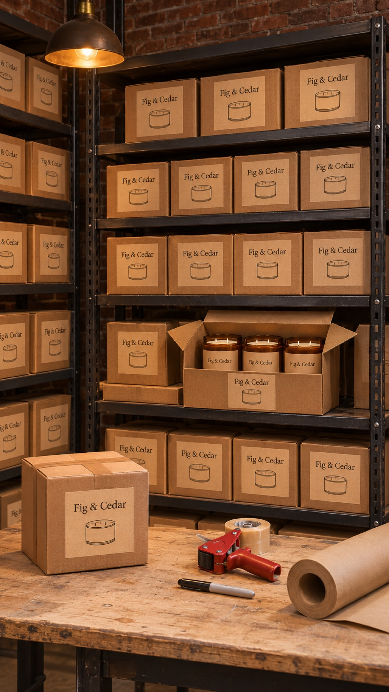
Her stockroom, sent to Seedance (@Image3): every box reads Fig & Cedar.
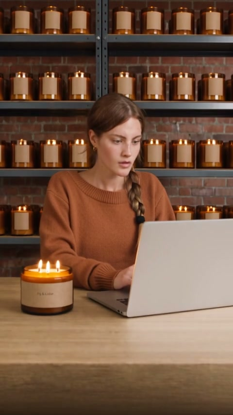
| Clip time | What | Line |
|---|---|---|
| 0-1s (15-16s in the ad) | From the flip's landing frame: she looks up from her laptop, shoulders drop, a small exhale. | — |
| 1-3.5s | Wide, her stockroom: shelves of boxes all labelled Fig & Cedar; she runs a finger along a row, counting. | Inner voice, lightly annoyed: “Still all here.” |
| 3.5-5.5s | Close-up: she tapes one Fig & Cedar box shut. | Inner voice, a little sad: “Nobody wants these...” |
| 5.5-7s | Insert: she writes DISCONTINUED on the lid. | — |
| 7-8s | She blows out the lit Fig & Cedar jar. | — |
| 8-10s | Macro on the smoking wicks. | Scout: “Don't guess why your shoppers don't buy.” |
Prompt: prompt-ownerA.txt · check: SD25-CHECK.md · uploads: asset list. Options A, B and C below stay as they were.
Take 3's flip came out on a generic desk. Instead, the flip ends on a flame: her white pillar candle blurs into the lit amber Fig & Cedar jar on the owner's table, and the focus pulls to the owner. Same move, but the candle carries us from buyer to maker.
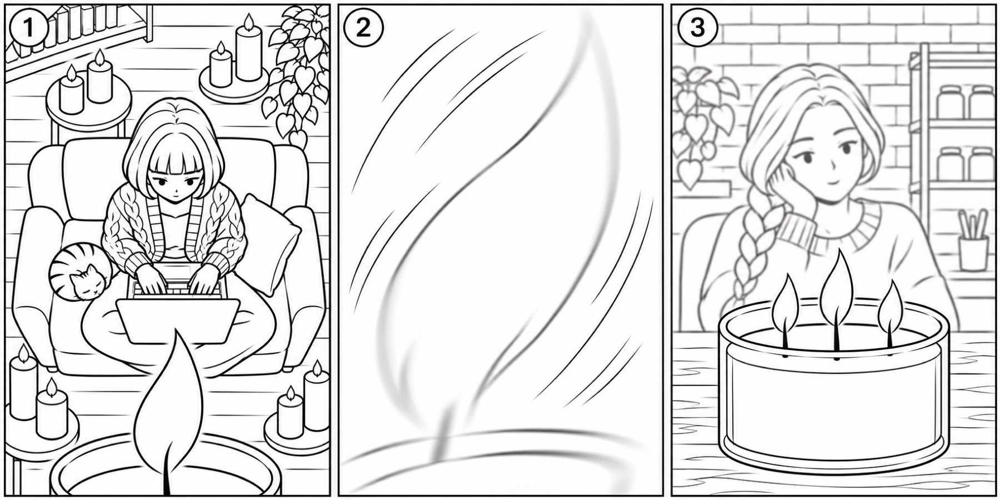
Her stockroom does the talking: boxes of unsold Fig & Cedar. No screen text to fake. She speaks only in her head, like the shopper.
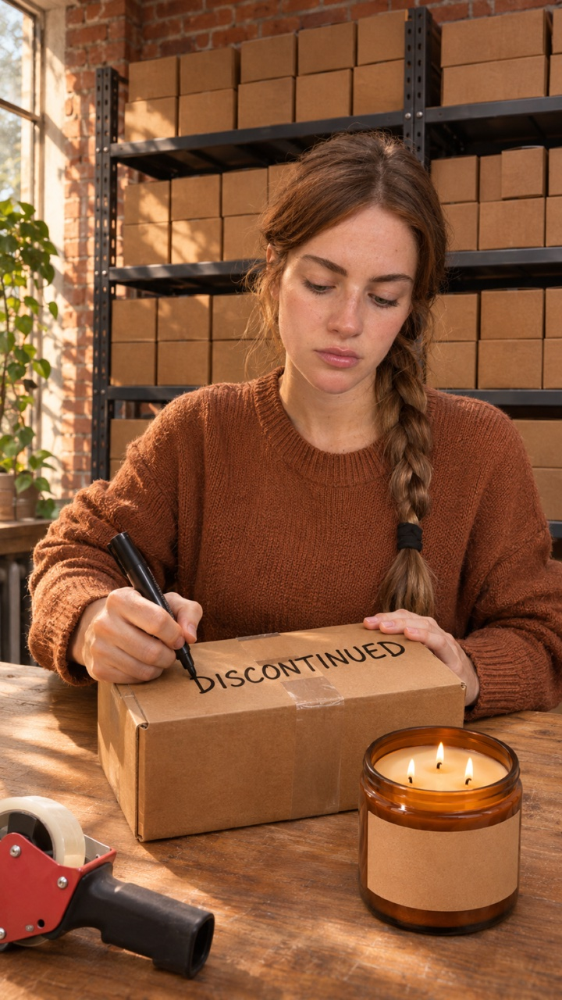
Key scene: she writes DISCONTINUED on a box of unsold Fig & Cedar in her stockroom.
Photoreal sketch of the key scene, free GPT Image with the real owner face; not sent to Seedance
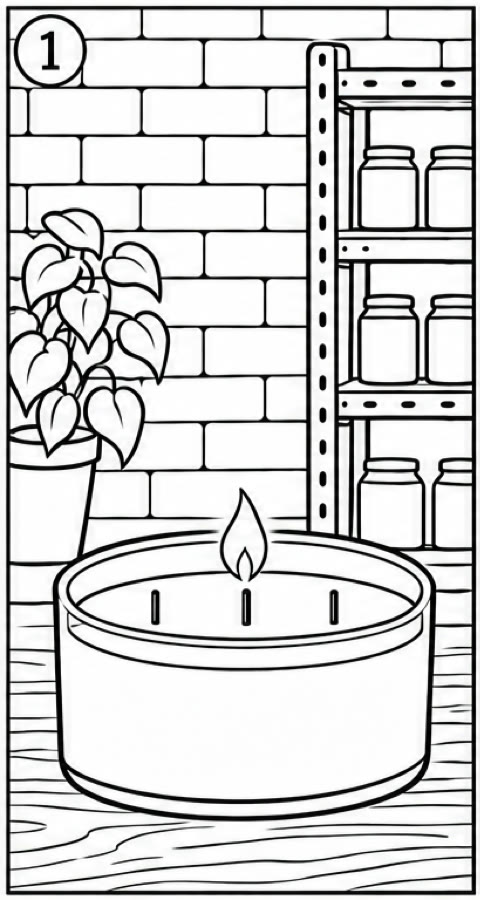
High flip, new landing
The flip ends on a flame: her white candle blurs into the lit amber Fig & Cedar jar on the owner's table, then racks focus to her.
no line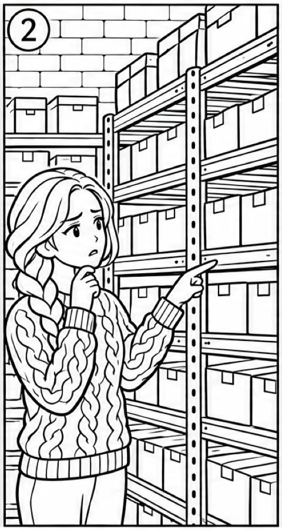
Wide, her stockroom
Shelves stacked with unsold Fig & Cedar boxes. She runs a finger along a row, counting, lips closed.
Inner voice, quiet: “Still all here.”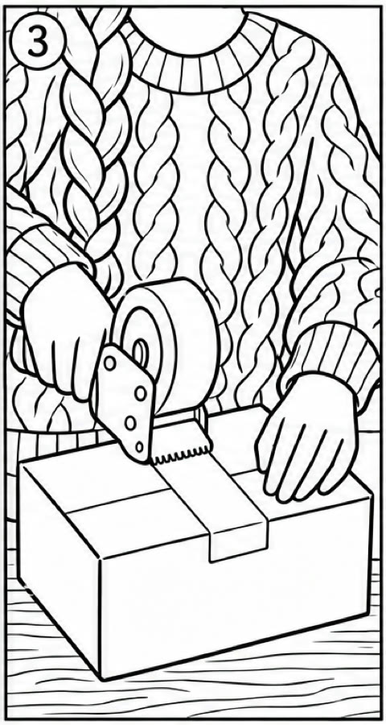
Close-up, her hands
She tapes a box shut. <tape screech>
Inner voice: “Nobody wants these.”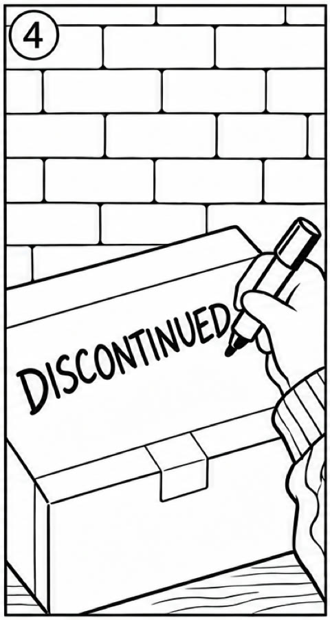
Insert, the box
She writes DISCONTINUED on it in marker. <marker squeak>
no line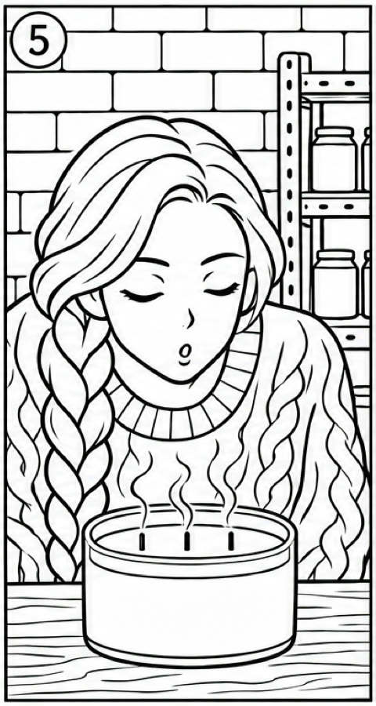
Close-up, then the smoking wicks
She blows out the Fig & Cedar jar; smoke rises. Scout, off screen.
Scout: “Don't guess why your shoppers don't buy.”She says the number, he is sure and wrong, she gives in. Real dialogue makes it a moment. The laptop screen is never readable.
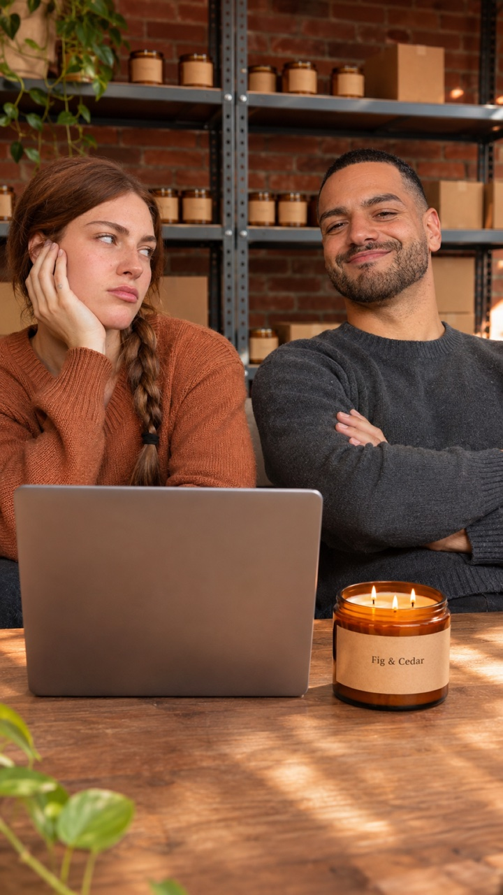
Key scene: he leans back, sure he is right; she is not convinced, but gives in.
Photoreal sketch of the key scene, free GPT Image with the real owner and co-founder face; not sent to Seedance
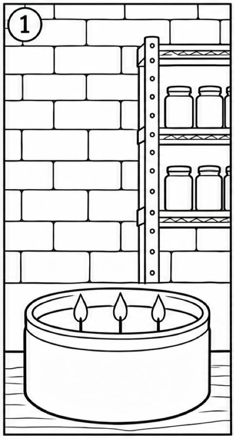
High flip, new landing
The flip ends on a flame: her white candle blurs into the lit amber Fig & Cedar jar on the owner's table, then racks focus to her.
no line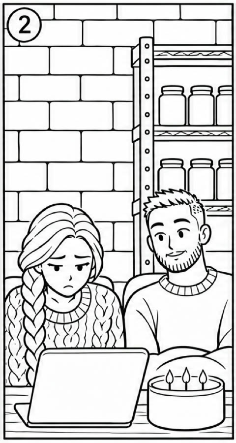
Medium, both at the desk
She stares at the laptop (screen not readable), deflated; he sits beside her.
Owner, out loud: “Three. We sold three.”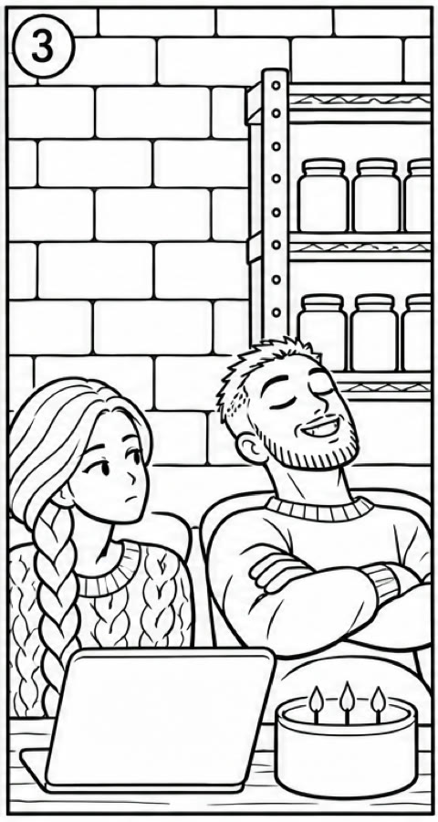
Medium, on him
He leans back, arms crossed, sure of himself.
Co-founder: “I told you. Our customers just aren't into Fig and Cedar.”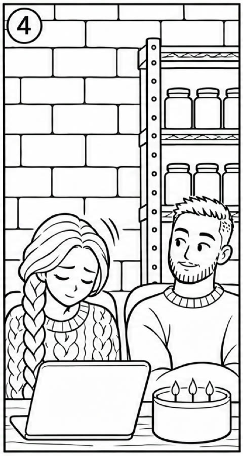
Close-up, her
She sighs and gives in.
Owner: “Yeah. You're right.”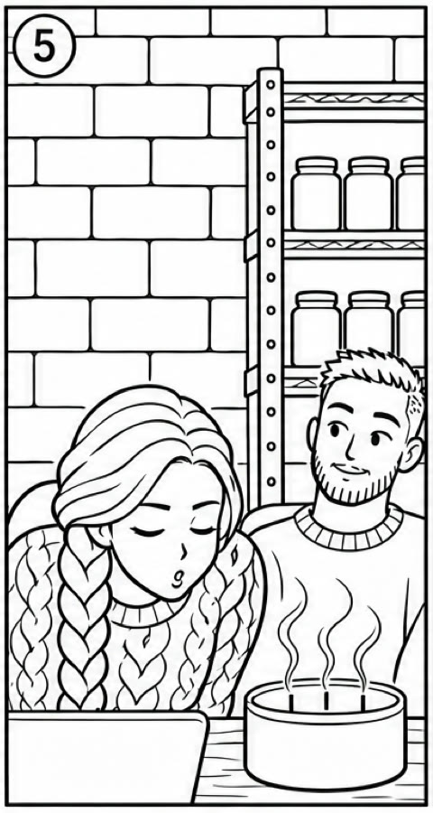
Close-up, then the smoking wicks
She blows out the Fig & Cedar jar; smoke rises. Scout, off screen.
Scout: “Don't guess why your shoppers don't buy.”Seedance draws a blank glowing laptop; we lay a real Shopify admin screen recording onto it after the take (free edit, as on H229). Real text, nothing generated.
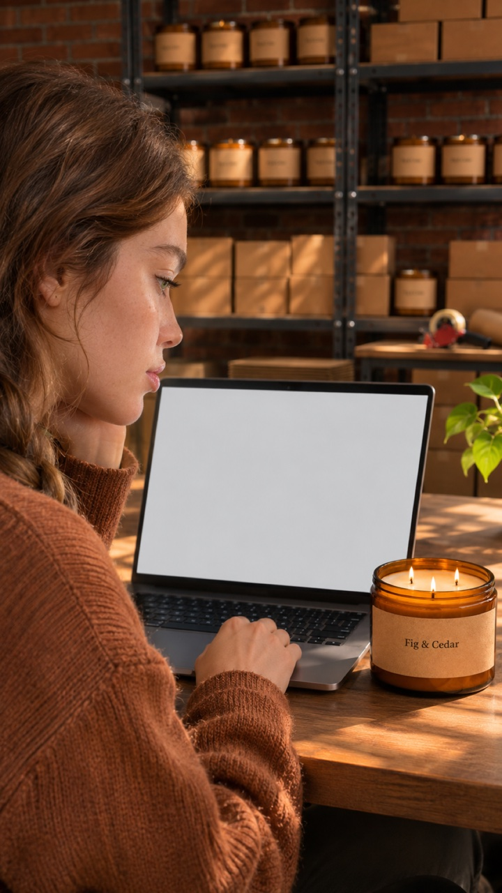
Key scene: the laptop screen stays blank in the take; a real Shopify admin recording is laid on after.
Photoreal sketch of the key scene, free GPT Image with the real owner face; not sent to Seedance
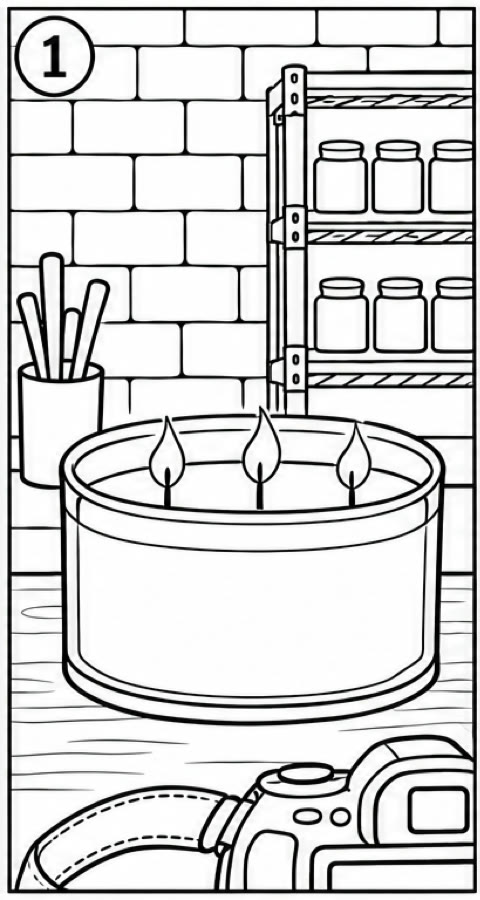
High flip, new landing
The flip ends on a flame: her white candle blurs into the lit amber Fig & Cedar jar on the owner's table, then racks focus to her.
no line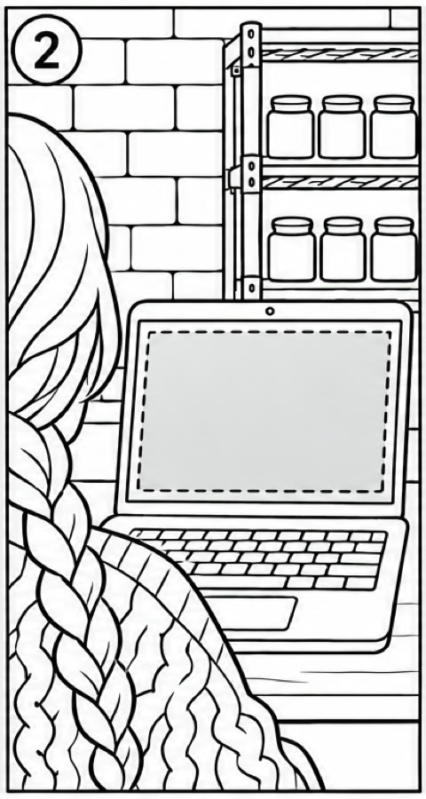
Over her shoulder onto her laptop
The screen is a REAL Shopify admin screen recording, laid onto the laptop after the take (free edit); Seedance only renders a blank glowing screen.
Owner, out loud, tired: “Three. In a whole month.”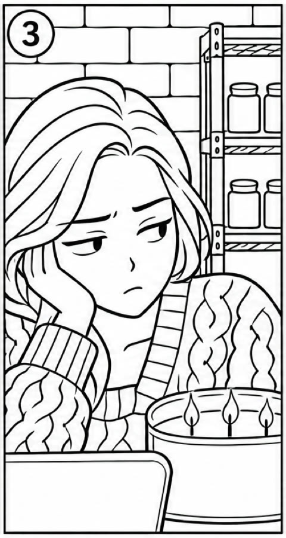
Close-up, her face
Lit by the screen, she glances at the lit jar beside her.
Owner: “Okay. People just don't like it.”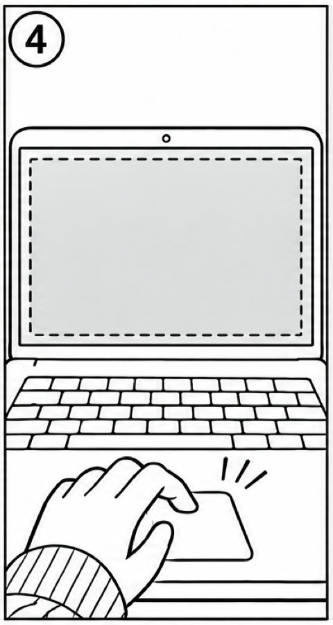
Macro, her hand on the trackpad
She clicks; the real recording shows the product being archived.
no line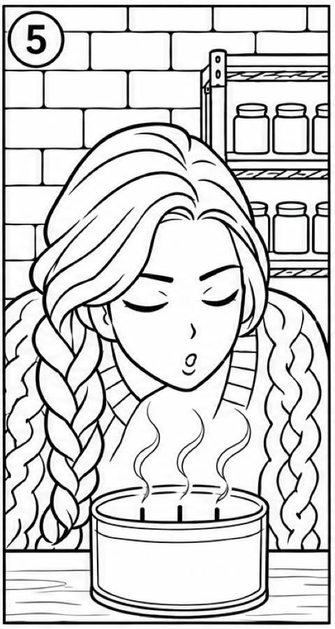
Close-up, then the smoking wicks
She blows out the Fig & Cedar jar; smoke rises. Scout, off screen.
Scout: “Don't guess why your shoppers don't buy.”Reply on the card with A, B or C. Nothing renders before you pick.